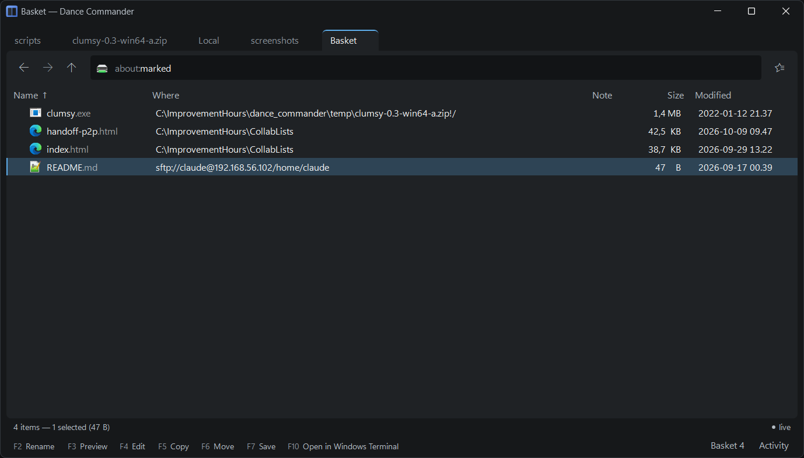

Marks, shelf, collections
Four ways to gather things, which differ in what they hold and how long they last.
| Holds | Lasts | Answers | |
|---|---|---|---|
| Marks | rows in the folder on screen | until you leave the folder or press Esc | Which of these do I mean now? |
| Shelf | files from many folders | this session | What have I picked up on the way? |
| Collections | files from anywhere, by name | saved | Which files belong together? |
| Bookmarks | places, with a label | saved | Where do I go often? |
Marks
“Copy these seven files to the other pane.” Insert or Space on each, then F5. The arrow keys move the cursor without losing them, and they stay put when the folder refreshes or you sort it differently. They belong to the folder: going somewhere else drops them. See Marking.
The shelf
“Put together what goes to the customer: a log from here, two configs from there, a screenshot from Downloads.”
Ctrl+B puts the selection on the shelf, wherever you are. The foot of the
window counts it (Shelf 3); click that, or go to about:shelf, to see
everything on it as one listing, with a column saying where each file lives.
- F5, F6, F2 and F3 act on the files themselves.
- Del takes a file off the shelf, never off the disk. Ctrl+Z puts it back.
- F7 saves the shelf as a collection, or adds it to an existing one.
- Empty shelf is in the menu.
- Dropping files onto the page adds them.
The shelf lasts until you close the application. If the file is moved by Dance Commander, the shelf follows it.

The shelf window
The same shelf in a small window that stays on top of everything, for moving files to and from programs that fill the screen. Win+Shift+B shows or hides it from any program, even in the middle of a drag; Show or hide the shelf window in the command palette does the same.
- Drop files or folders on it to put them on the shelf. It holds files that are somewhere already. Text dragged from an editor or a browser isn't taken; dropped on a pane instead, it becomes a file there.
- Drag from it to drop a copy into another program. It never moves the original.
- Del takes an item off, with undo. Esc hides the window.
It opens without taking focus from the program you are in, and stays available while the main window is minimised.
Collections
“The files for the release checklist, the same set every release.”
A collection is a named, saved set of files and folders from anywhere: local disk, a server, inside an archive. Its rows are the files themselves, so preview, copy and the rest work as they do in a search result.
- Adding: Add to collection… in the selection's menu or the command
palette; drop files onto a collection's page or its row in
about:collections; or save the shelf with F7. - Managing:
about:collectionslists them. F7 makes a new one, Del deletes one (asking first if it has members). The files are never touched. - Inside one: Del takes a file out of the set, not off the disk, and Ctrl+Z puts it back. Ctrl+Shift+Enter goes to where the file actually lives.
When Dance Commander moves or renames a file, collections update to follow it. A file moved by some other program shows as not found instead of silently disappearing from the list.
Bookmarks
“The build server's log folder. My worktrees.” A bookmark goes somewhere: you open it rather than act on it. See Bookmarks.